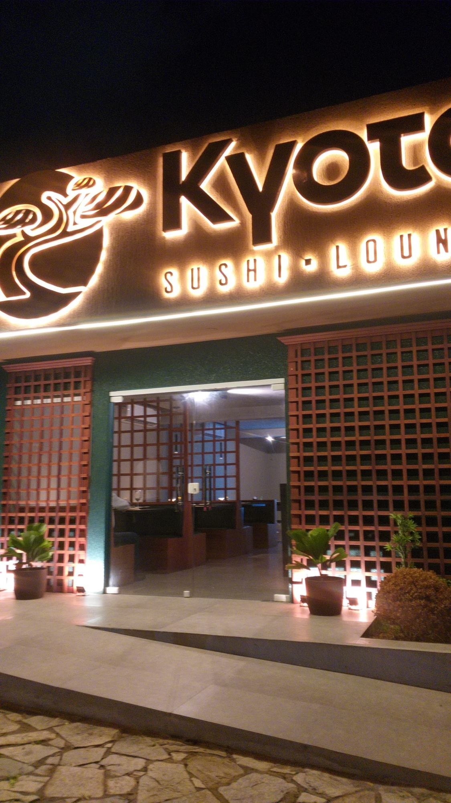
Do balcão de sushi ao ramen
Sashimi, niguiri com caviar, tataki, gyoza e ramen, num lounge japonês na Alexandrino de Alencar.
- 4,7 no Google · 114 avaliações
- Terça a domingo
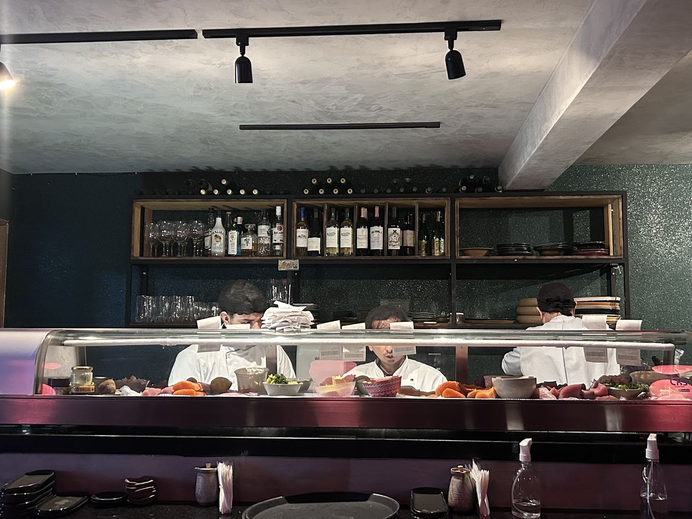
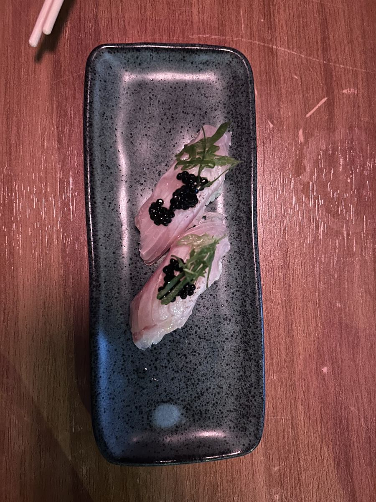
Um lounge japonês no Tirol
Balcão de sushi à vista, salão escuro em madeira e uma cozinha que vai do corte cru ao caldo quente: do sashimi e do niguiri ao tataki, ao gyoza e ao ramen.
Almoço de quarta a sábado. Jantar de terça a domingo.
- Nota no Google
- 4,7
- Avaliações
- 114
- Dias por semana
- 6
Cru, selado e em caldo
Pratos que aparecem nas fotos de quem já sentou à mesa do Kyoto.
-
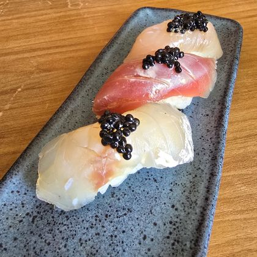
preço a confirmarNiguiri com caviar
Fatias de peixe sobre o arroz, finalizadas com caviar.
-
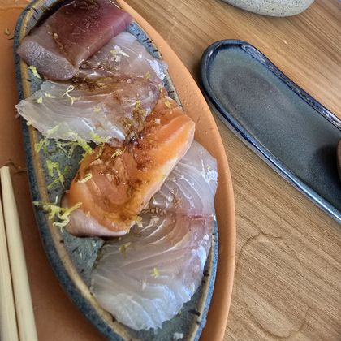
preço a confirmarSashimi
Cortes de salmão, atum e peixe branco, em fatias.
-
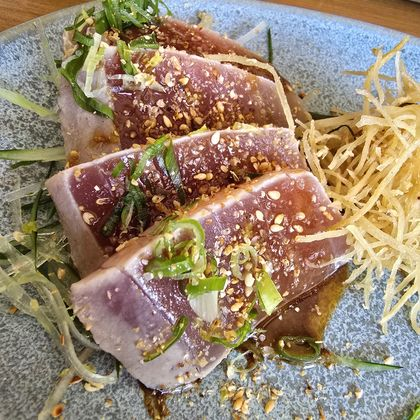
preço a confirmarTataki
Atum selado e fatiado, com gergelim, cebolinha e batata palha.
-
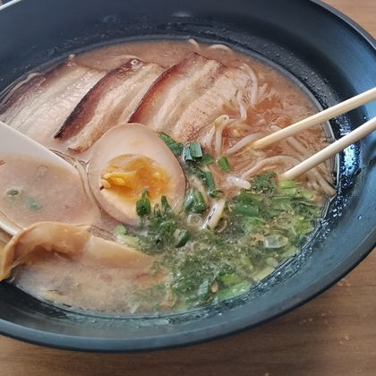
preço a confirmarRamen
Caldo com macarrão, fatias de carne, ovo marinado e cebolinha.
-
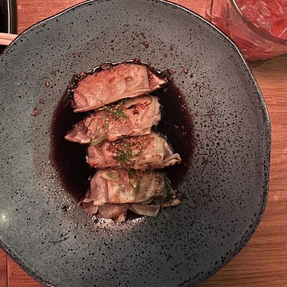
preço a confirmarGyoza
Pastéis japoneses servidos no molho, com cebolinha.
Demonstração: os pratos acima são os que aparecem nas fotos e avaliações do Google. Descrições, preços e o cardápio completo entram quando a casa enviar o cardápio. a confirmar
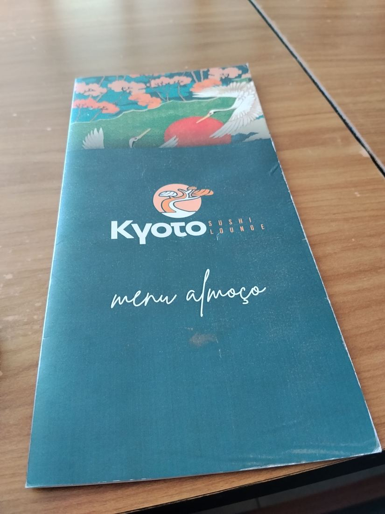
À mesa no Kyoto
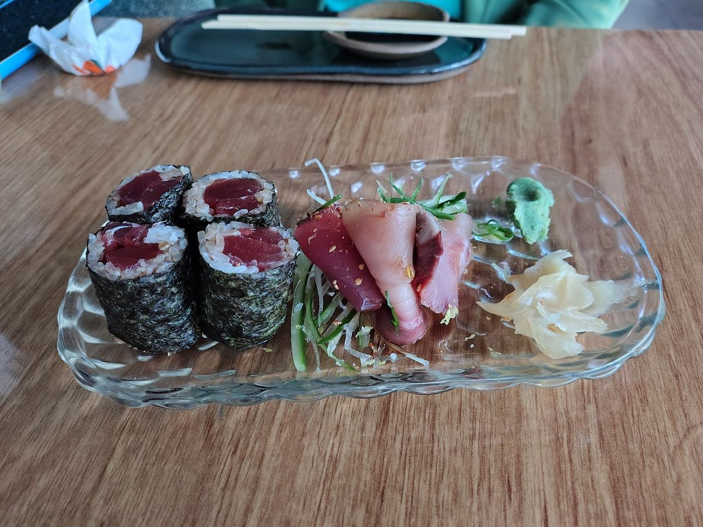
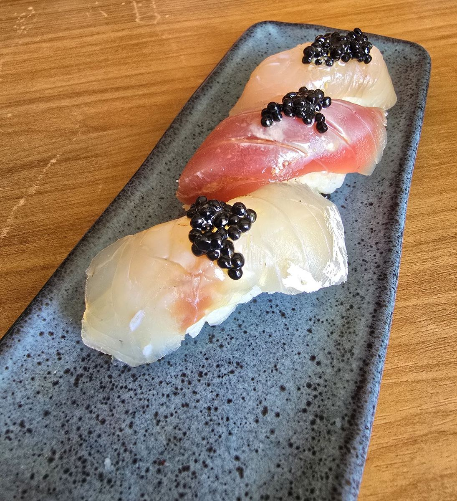
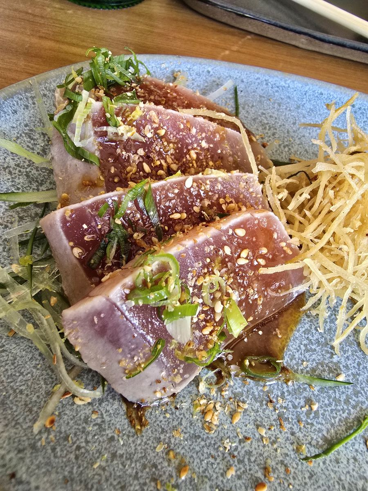
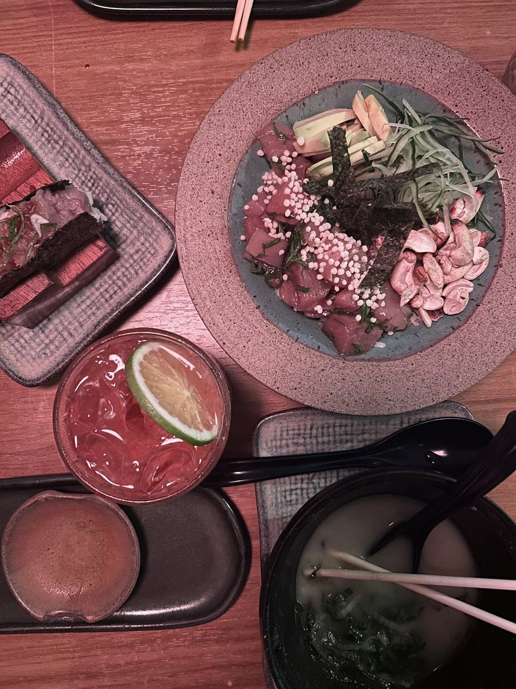
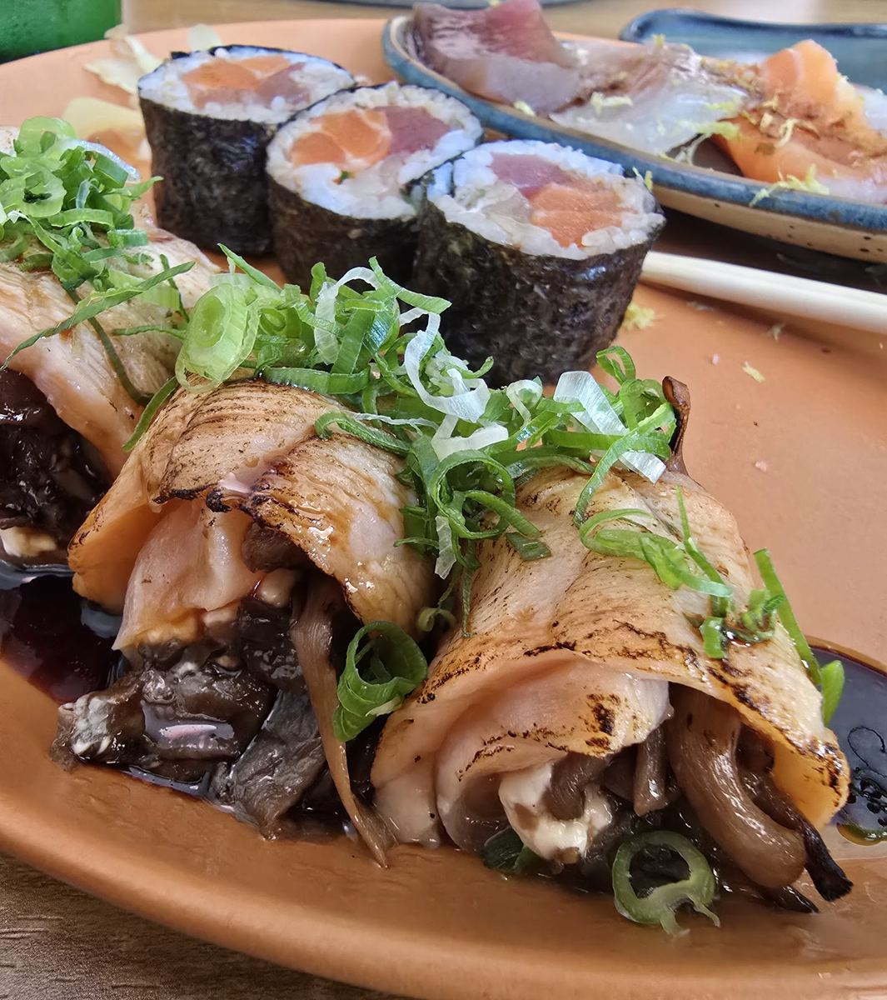
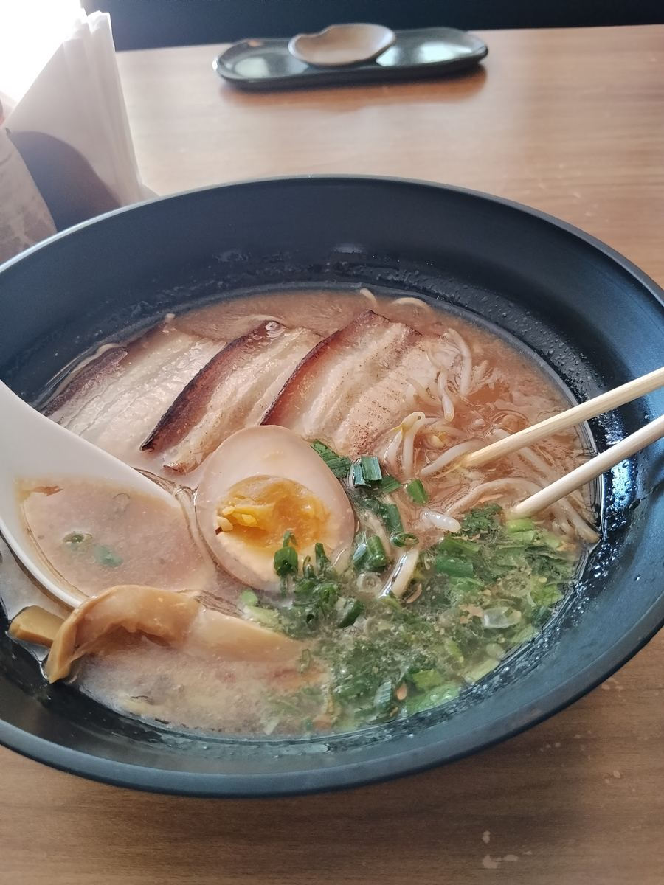
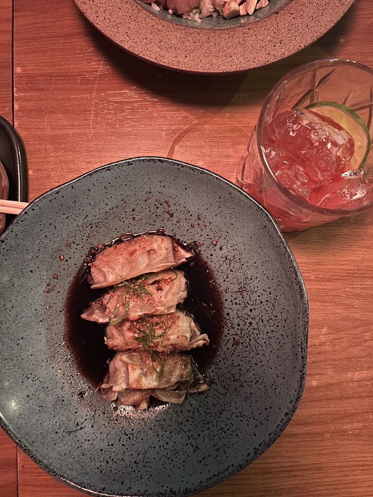
Fotos publicadas por clientes no Google Maps.
4,7
114 avaliações no Google Maps
“Se você procura um lugar onde pra comer o verdadeiro ramen japonês em Natal, esse restaurante é pra vc!”
“Com certeza dos melhores de Natal, ótima localização, ótimas opções no menu executadas por profissionais que entendem do assunto.”
“Minha experiência no Kyoto foi tão especial que voltei duas vezes na mesma semana.”
“Equipe educada e atenciosa […] ingredientes de qualidade e atenção a cada detalhe.”
“O prato chegou quentinho e delicioso, fora q o macarrão é de fabricação própria deles.”
“Destaque para o Ramen feito artesanalmente.”
Venha conhecer o Kyoto
Av. Alm. Alexandrino de Alencar, 1624Tirol, Natal/RN
- Terça
- 18h às 23h
- Quarta a sábado
- 11h às 15h · 18h às 23h
- Domingo
- 18h às 23h
- Segunda
- Fechado
reservas a confirmar WhatsApp a confirmar